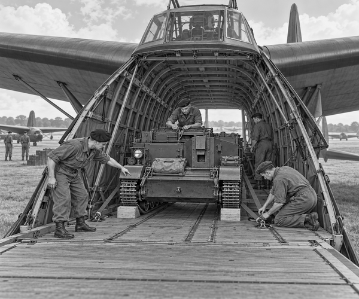

It was 6 June 1944, during World War Two.
A giant wooden aircraft waited at an airfield in England.
It was called a Hamilcar.
It had enormous wings.
It had two pilots in a high cockpit.
But it had no engines.
The Hamilcar was a glider.
Another aircraft would tow it into the sky.
Then the glider would fly on its own.
That was not its only surprise.
A small tracked vehicle rattled towards its open nose.
It was a Universal Carrier.
It looked a little like a tiny tank.
But its main job was to carry people and equipment.
Today, this one had to fly.
Carrier fact: A Universal Carrier weighed about four tons and usually had a crew of four. Its tracks helped it travel over rough ground.
The driver lined up with the ramp.
Clatter. Clatter. Clatter.
The tracks rolled onto the wooden floor.
The carrier fitted inside.
Only just!
Ground crew placed strong blocks around it.
They pulled heavy anchors tight.
They checked every fastening.
The carrier must not move during the flight.
The Hamilcar's great nose closed.
A long tow rope joined it to a powerful aircraft.
The aircraft raced along the runway.
The glider followed.
Its wheels bumped over the grass.
Faster and faster they went.
Then the Hamilcar lifted.
A four-ton tracked vehicle was flying!
The two aircraft crossed the English Channel.
Fields appeared ahead.
They had reached Normandy in France.
The glider pilots released the tow rope.
Suddenly, the engine noise moved away.
The Hamilcar sailed through the air.
The pilots chose a clear landing place.
The great wheels touched the ground.
Bump!
The glider bounced once.
It rolled across the field and stopped.
The crew lifted the hinged nose.
They released the carrier's anchors.
Its engine started with a growl.
Down the ramp it came.
Clatter. Clatter. Clatter.
The little carrier had landed.
Glider fact: Hamilcars could carry up to eight tons. Thirty-four were used on 6 June 1944 to bring heavy equipment, including Universal Carriers, into Normandy.
On the ground, Universal Carriers did many jobs.
They moved people and supplies.
They carried radios.
They towed equipment.
Some even helped carry injured people to safety.
More than 100,000 Universal Carriers were made.
It was one of the busiest little vehicles of World War Two.
It had no wings.
Yet, for one amazing journey, the little carrier flew.
1. What vehicle travelled inside the Hamilcar?
2. Why was the carrier anchored to the floor?
3. How did the carrier leave the glider?